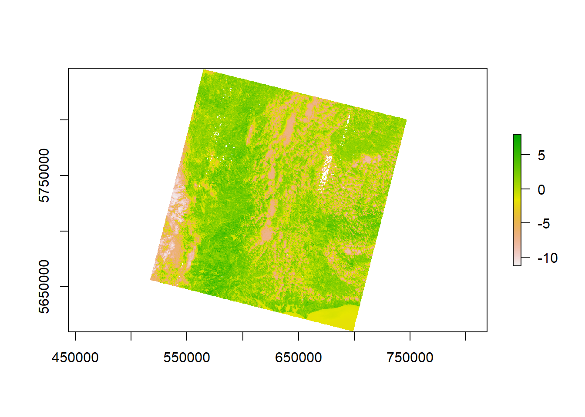

# https://downloads.hindawi.com/journals/js/2016/1480307.pdf
# http://www.gisandbeers.com/GeoBazar/Libros/Teledeteccion/Manual-Landsat-9-Handbook.pdf
library(raster)Loading required package: sp# Load data
d <- "../../../OneDrive/Data/landstat/LC09_L2SP_202024_20220826_20220830_02_T1/"
red = raster(file.path(d, "LC09_L2SP_202024_20220826_20220830_02_T1_SR_B4.TIF"))
near.infrared = raster(file.path(d, "LC09_L2SP_202024_20220826_20220830_02_T1_SR_B5.TIF"))
band_10 = raster(file.path(d, "LC09_L2SP_202024_20220826_20220830_02_T1_ST_B10.TIF"))
meta <- readLines(file.path(d, "LC09_L2SP_202024_20220826_20220830_02_T1_MTL.txt"))
M_L <- meta[stringr::str_detect(meta, "RADIANCE_MULT_BAND_10")] |>
stringr::str_split(" = ") |>
unlist() |>
dplyr::nth(2) |>
as.numeric()
A_L <- meta[stringr::str_detect(meta, "RADIANCE_ADD_BAND_10")] |>
stringr::str_split(" = ") |>
unlist() |>
dplyr::nth(2) |>
as.numeric()
toa <- M_L * band_10 + A_L
K_1 <- meta[stringr::str_detect(meta, "K1_CONSTANT_BAND_10")] |>
stringr::str_split(" = ") |>
unlist() |>
dplyr::nth(2) |>
as.numeric()
K_2 <- meta[stringr::str_detect(meta, "K2_CONSTANT_BAND_10")] |>
stringr::str_split(" = ") |>
unlist() |>
dplyr::nth(2) |>
as.numeric()
BT <- (K_2 / (log(K_1/toa)+1))- 273.15 # kevin to celcius
nvdi_s <- 0.2
nvdi_v <- 0.5
nvdi <- (near.infrared - red)/(near.infrared + red)
p_v <- nvdi
p_v@data@values <- ((p_v@data@values - nvdi_s)/(nvdi_v-nvdi_s))^2
# If nvdi less than 0 then water and emissivity (e_w) is 0.991
# If nvdi < nvdi_s then emissivity (e_s) is 0.0996
# If nvdi > nvdi_v then emissivity (e_v) is 0.973
# if nvdi is between 0.2 and 0.5 then e_v*P_V + e_s(1-P_V)+C_l
e_w <- 0.991
e_s <- 0.996
e_v <- 0.973
C_l <- 0.005 # correction
e <- p_v
e@data@values <- ifelse(
e@data@values <= 0, e_w, ifelse(
e@data@values >0 & e@data@values <= nvdi_s, e_s, ifelse(
e@data@values > nvdi_s & e@data@values <= nvdi_v, e_v * e@data@values + e_s * (1-e@data@values) + C_l, e_v
)
)
)
lambda <- 10.895 # average limiting wavelength
rho <- 1.438 * 10e-2 # see paper
LST <- (BT / (1 + (0.0010895 * BT / 1.4388) * log(e)))
plot(LST)